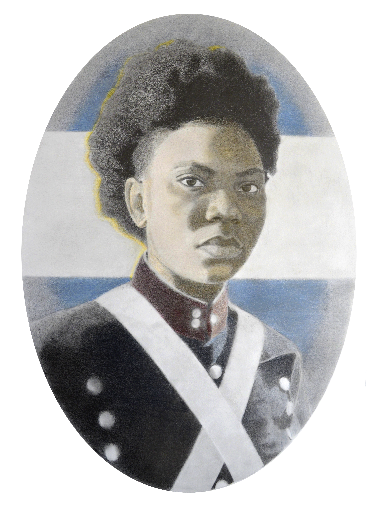
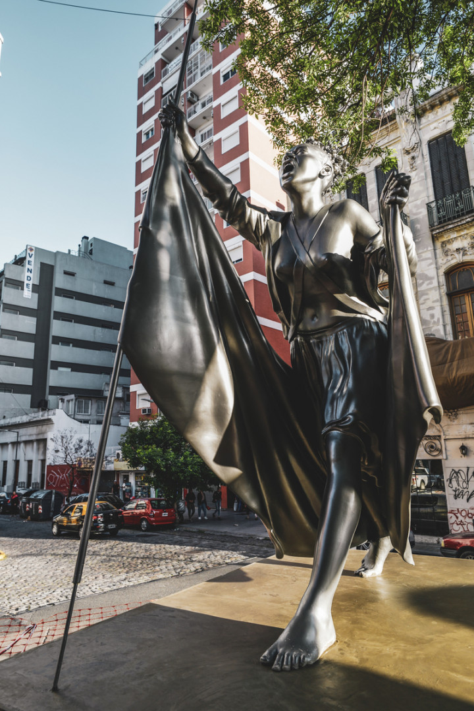
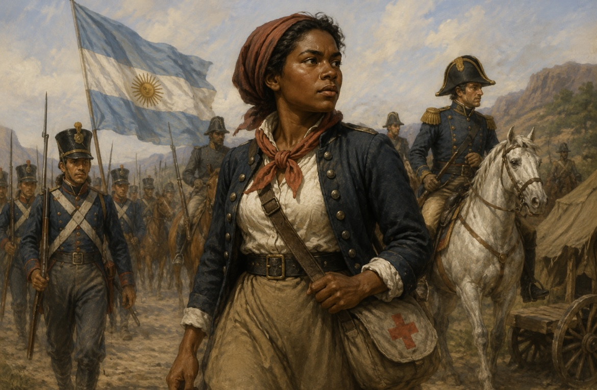

Importancia histórica
María Remedios del Valle ocupa un lugar importante en la historia argentina por su participación en las luchas por la independencia. Su historia permite conocer el papel que tuvieron las mujeres y las personas afrodescendientes en este proceso.
Durante mucho tiempo, su participación no recibió el reconocimiento que merecía. Actualmente, su figura es recuperada para comprender una parte de la historia argentina que durante años permaneció poco visible.
Su legado en la actualidad
El legado de María Remedios del Valle continúa presente en la sociedad argentina. Su nombre es utilizado para recordar la participación afroargentina en la historia y para destacar el papel de las mujeres en la construcción del país.
Su reconocimiento también contribuye a valorar la diversidad cultural de la Argentina y a mantener viva la memoria de quienes participaron en la construcción de nuestra nación.
Para conocer más sobre su historia, podés consultar información oficial sobre María Remedios del Valle .
Video sobre María Remedios del Valle
En este video educativo se presenta la historia de María Remedios del Valle y su participación en las luchas por la independencia.
Curiosidades
- Fue conocida como la “Madre de la Patria”.
- Participó en las luchas por la independencia junto al Ejército del Norte.
- Su figura está relacionada con la historia de la comunidad afroargentina.
- El 8 de noviembre se estableció una fecha nacional en su homenaje.
Su historia también permite conocer una parte de la participación de las mujeres en las luchas por la independencia, que durante mucho tiempo recibió menor reconocimiento.
Frases y reconocimientos
No se conservan numerosas frases célebres pronunciadas por María Remedios del Valle. Sin embargo, el reconocimiento que recibió a lo largo del tiempo permite destacar su valentía y su participación en las luchas por la independencia.
El nombre de “Madre de la Patria” se convirtió en una de las formas más conocidas de recordar su figura.
Galería de imágenes



Ilustración generada con inteligencia artificial para representar de manera educativa la época histórica de María Remedios del Valle.
Imágenes y representaciones que permiten conocer y recordar la figura de María Remedios del Valle.